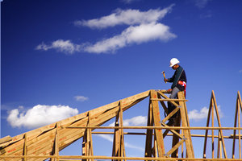
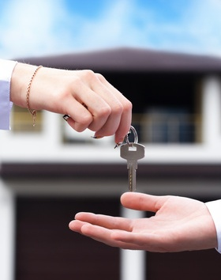
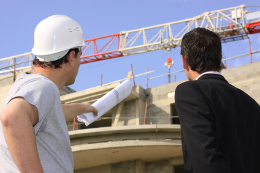

Expérience

Forte d’une grande expérience, Daruma Construction met à votre disposition son équipe professionnelle et qualifiée ; des compétences humaines qui vous aideront à mener à bien votre projet dans les meilleurs délais. Notre activité génère, de manières directe et indirecte, près de 500 postes de travail.
Notre entreprise de construction dispose notamment d’un parc de machinerie de dernière génération : grues, bob cats, camions.
Confiance

Dynamisme, flexibilité et efficacité animent l’ensemble de nos actions… C’est d’ailleurs pour ces raisons que Daruma Construction a pu cultiver une solide relation de confiance tant avec nos clients particuliers ou professionnels qu’avec les entreprises partenaires.
En somme, Daruma Construction est une entreprise de confiance, reconnue pour sa qualité de travail, sa capacité à construire et son respect pour les échéances…
Pour toutes ces raisons, Daruma Construction reste votre partenaire privilégié pour tous vos projets de construction !
Sécurite

Depuis toujours, Daruma Construction s’est engagée pour améliorer la sécurité sur tous ses chantiers.
Des mesures de sécurité s’alignant sur les normes de la législation en vigueur, sont adoptées par nos collaborateurs à tous les niveaux de construction.
Une chose est sure : notre priorité, c’est la sécurité !
Qualité
Constructeurs depuis de nombreuses années,
Daruma Construction vous garantit des services de qualité pour bâtir en toute confiance.